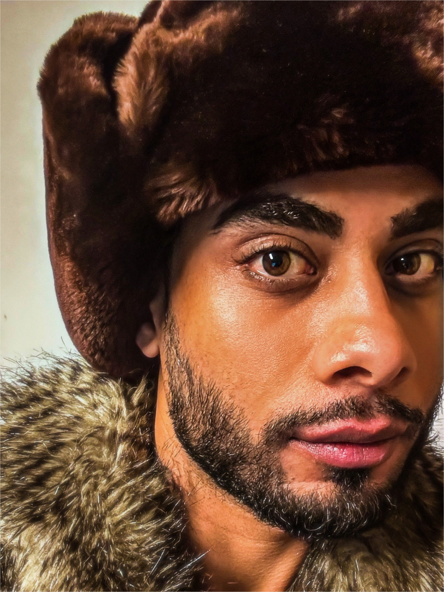

I work across product, interface systems, music, visual culture, and cognitive systems.
My work has always moved between structure and expression. I am interested in how ideas become clear: how they are shaped through language, design, sound, image, and interface, and how they can become useful without losing their original depth.
My background includes visual communication, brand and website design, commercial design, public communication, independent art, and music production. I have worked with campaign materials, retail environments, digital projects, visual systems, and creative direction. These experiences shaped the way I work: I care about clarity, rhythm, responsibility, and the feeling of a system when someone enters it.
I am drawn to the space between mind, communication, and structure. Brain function, cognitive science, psychology, leadership, and project management all influence the way I think about product work. I am less interested in isolated skills and more interested in how different forms of knowledge can support one coherent direction.
Neuroartan is where these interests come together. It includes ICOS, product thinking, interface design, cognitive systems, model personalization, documentation, communication, and AI-assisted building. For me, it is the place where my professional, creative, and intellectual work becomes one structured body of work.
I lead by vision, structure, and continuity. I prefer calm systems, clear language, and work that can grow without becoming noisy.